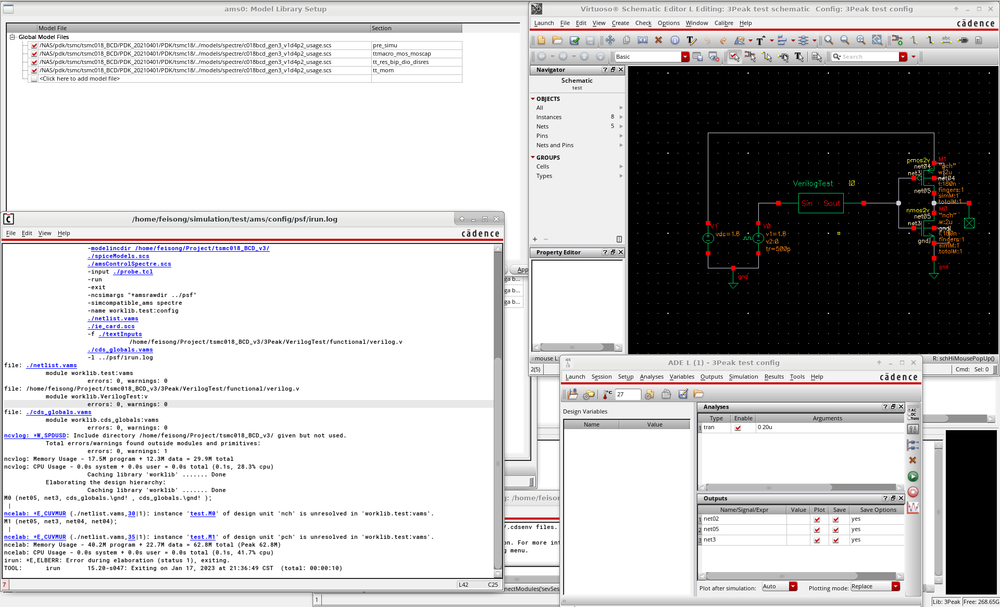
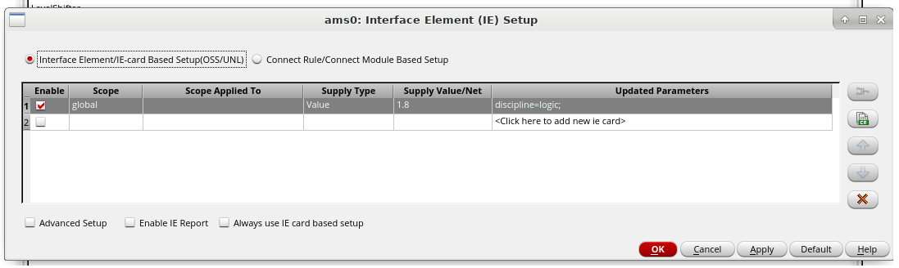
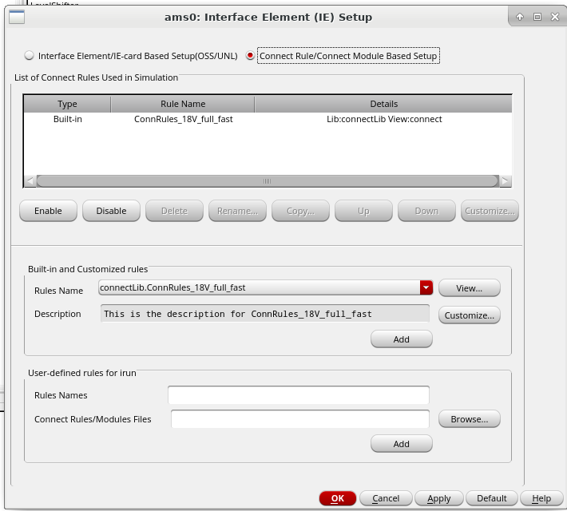
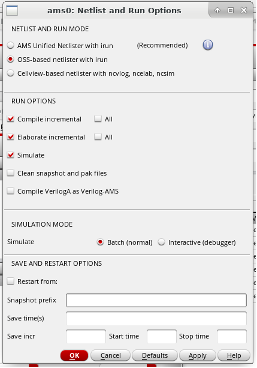

Fix the TSMC018BCD Gen3 Mix-signal Simulation Error
The post is suitable for one working in AMSV(IME) of UM. I’m not sure if the error comes from the incomplete PDK or lack of some connection libraries. But actully I’ve fixed them with Lewis’s help, who is a stuff of IME.
What are the errors?
The error popped out when I followed the steps of some tutorial videos or blogs, like
- Hussein Hussein, AMS - Verilog code in cadence
- 沅晉李, Run mixed-signal in cadence virtuoso. Take a digital low-dropout regulator (DLDO) for example.
- 核弹军, 如何在Virtuoso中进行AMS混合信号仿真
- mymatin1004, 使用 Cadence ams 仿真器 对 混合信号电路 进行仿真.
As the figure below shows, instance of design is unresolved.

Yes, I did search the error, but all the “solutions” I’ve tested didn’t work. Hera are the “solutions”, though which don’t work in my case, but sometime they may help you out.
- Go to
ADE -> Setup -> Model Library Setup, and check if themodel filesare the same as those when using spectre only. - Go to
ADE -> Setup -> Connect Rules/IE Setup, then changeglobal supply value/netor just useconnectLib.ConnRulesinConnect Rule/Connect Module Based Setup. Well, you can switch from this one to the other one, just try it.

 - Go to
ADE -> Simulation ->Netlist and Run Options, changeNETLIST AND RUN MODEfromCellview-based netlister with ncvlog ncelab, nsimtoOSS-base netlister with irunorAMS Unified Netlister with irun.
 - Check if you have configured
configcorrectly, especiallystop list. Most time this solution is not necessary, because beginners always use templates to startconfigconfiguration.
The way to fix the error
I asked Lewis for help, and he told me to try Xcelium rather than irun or ncvlog. As soon as I read the e-mail, Xcelium made me confused. But Google.com is a nice tool, right? Jun’s blog explains it perfectly.
So in a word, my solution is to change the simulation enviroment. Xcelium is the newest tool, and at the same time, the version of Virtuoso needs changing, too. The correct conf.sh is shown below, which you may change some softeares’ versions (To see versions of software, plz open Terminal and type in module av.), and in my case, it works well.
setenv CDS_AUTO_64BIT spectre
module unload icfb
module unload assura
module unload cadence/mmsim
# module load cadence/icfb/ic6
# module load cadence/spectre/171_627
module unload cadence/icfb
module load cadence/icfb/618_250
module unload cadence/spectre
module load cadence/spectre/21_10_173
module unload calibre
module unload mentor/calibre
module load mentor/calibre/2015.4_33.23
# module unload incisiv
# module load cadence/incisiv/1520_047
module unload cadence/xcelium
module load cadence/xcelium/2203_01
module load sonnet/sonnetsuites/sonnet
module load empyrean/alps/2019_12_SP2
virtuoso &
Then open Virtuoso, and check if NETLIST AND RUN MODE of ADE -> Simulation -> Netlist and Run Options is changed to AMS Unified Netlister with xrun. After that, you can continue the tutorial vidoes or blogs, and have a good time doing mix-signal simualtion.